说明：累计相关case问题排查
1. 流程概述
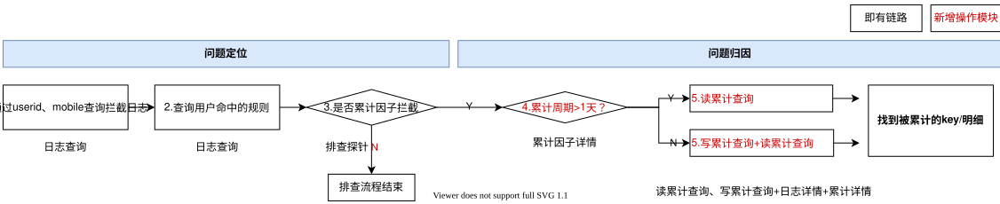
2.操作步骤
|
步骤 |
说明 |
|---|---|
|
问题定位 |
1.查询用户日志 入口：日志查询 说明：在日志查询中输入目标用户的userid或其他关联信息，点击查询，查看场景和规则的命中情况。 注意：非必要，查询天数不要设的过长（3天以内），时间越长数据加载时间越久！ 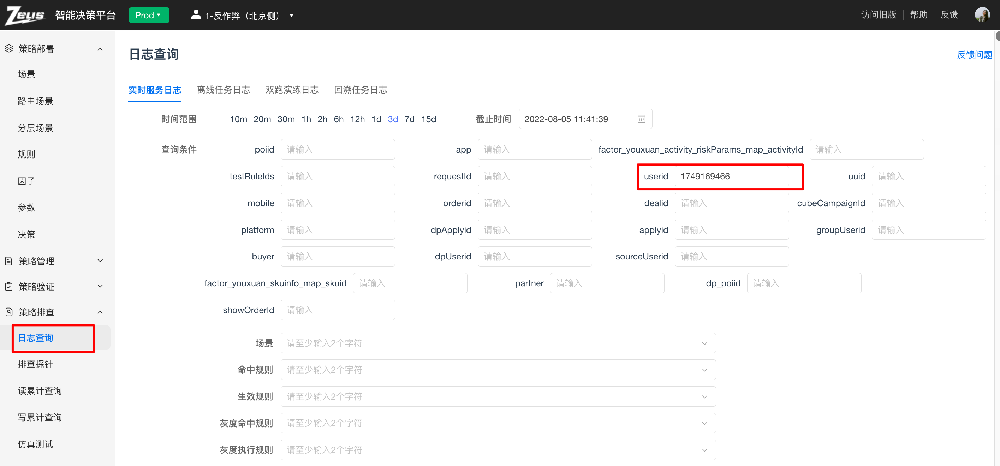 2.规则与决策查询 入口：日志查询详情 说明：日志查询后观察请求命中决策和具体规则，如图：用户命中拦截决策和2344075累计类规则，点击规则蓝色放大镜按钮可查看规则执行逻辑，定位出规则为什么会被命中。 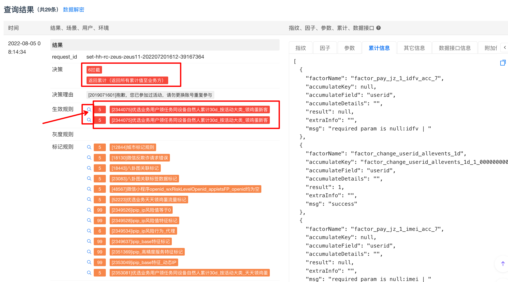 3.是否因为累计因子被拦截 1）由步骤2可以看到具体的规则命中情况，如果规则是累计类规则或规则的命中是因为累计因子被命中，则按照本手册继续排查。 2）点击规则旁的放大镜可进入排查探针，页面展示的是规则命中链路的拓扑图，图中红色框为命中的链路，如果是累计因子会有“累计”标注，且会显示累计因子的取值。如图可看出规则命中点了累计因子factor_youxuan_user_254_identifyIdDecrypt_user_acc_30d_campaign_name，累计值为2 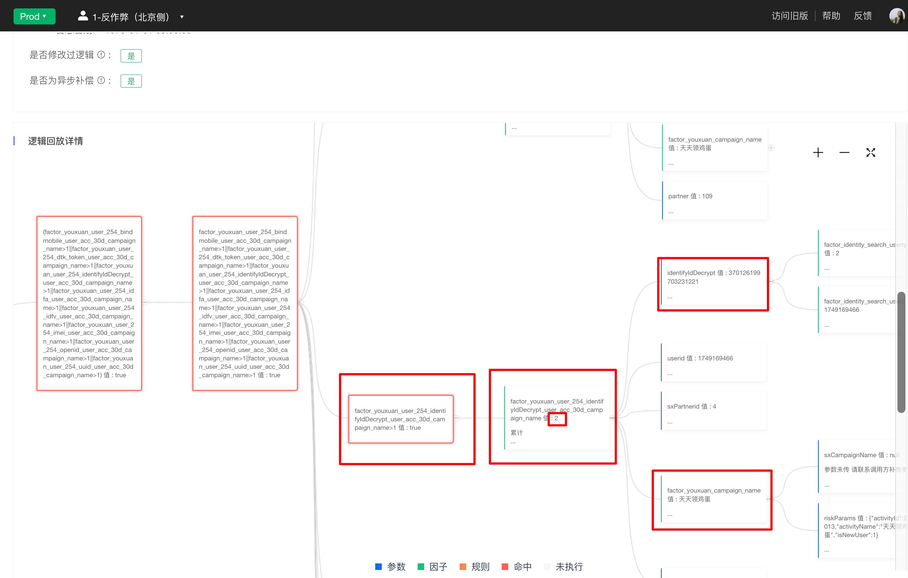 3）累计因子逻辑确认 点击累计因子下方"..."「详情」按钮可查看因子的配置信息，因为累计因子的命中情况是由累计因子配置逻辑决定的，需注意以下几点信息： 按何累计：即每次请求中根据哪些key为依据对累计值做的累计。 累计值：累计的主体，累计因子的值即为符合累计条件的累计值的个数。（举例：比如，对同uuid同ip的userid进行计数，那么“按何累计”：ip,userid ，“累计值”：“userid”） 剔除重复项：对满足累计条件的相同累计值剔除。 累计自身：注意 如果本次请求满足累计条件那么会在满足写累计的累计值上自动加1。 累计周期：判断是否超过1天 累计因子跳转入口： 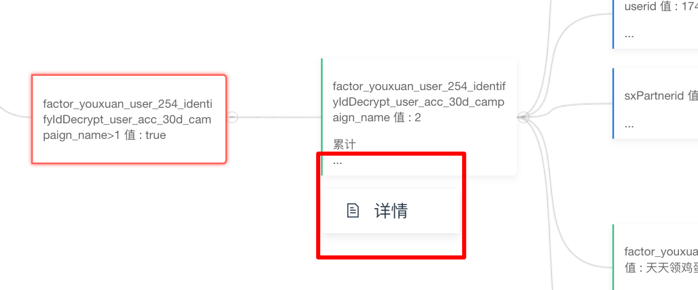 累计因子详情 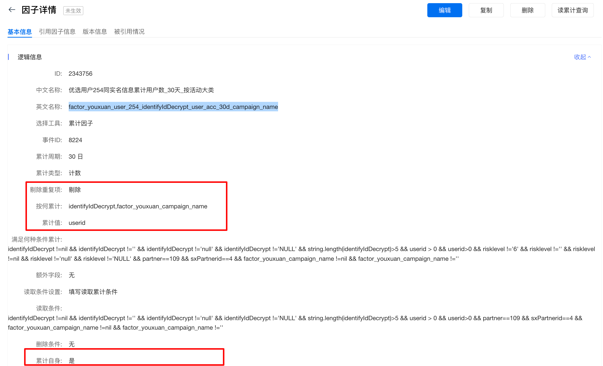 4）查看累计因子【按何累计】字段取值 从累计详情可看到，累计因子是按照 identifyIdDecrypt、factor_youxuan_campaign_name这两个字段累计的，如果要查询累计明细需明确当前case这两个字段的取值。查询路径 A.排查探针（拓扑图）】或B.【日志详情】 A 排查探针（拓扑图） 在步骤【3.是否因为累计因子被拦截】中，您已经打开排查探针拓扑图了，命中的累计因子后的分支展示了这个累计因子依赖的参数/因子，从分支中找到按何累计字段的取值。比如，本例中。 identifyIdDecrypt=370126xxxxxxxx1221、factor_youxuan_campaign_name=天天领鸡蛋。注意：排查探针不能copy参数/因子取值，读写查询时需手动输入。 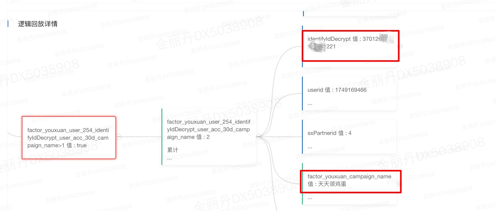 B 日志详情 注意：查询前请明确查询的是参数还是因子，在相应的tab command/control+F查询。 identifyIdDecrypt取值 factor_youxuan_campaign_name取值 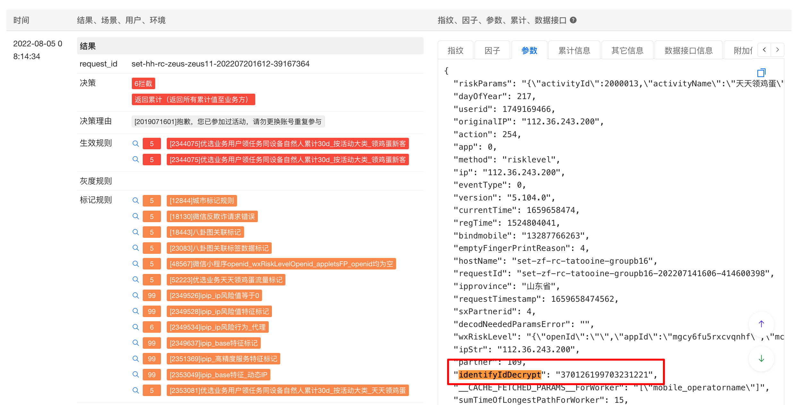 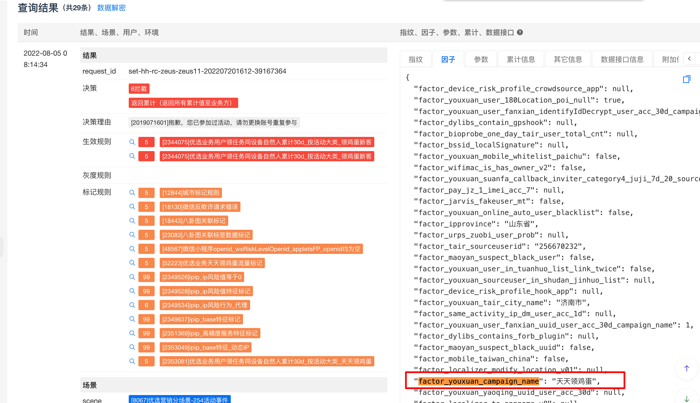 |
|
问题归因 |
4. 累计周期判断 从累计因子详情判断累计周期， 1）判断累计因子周期是否超过1天，超过1天的建议用读累计查询。 2）累计周期小于1天的因子查询小于1天的建议读写累计查询相结合，因为读累计值查询到的是【当前时间点至（当前时间-累计周期）】这段时间的累计情况，如果是短周期且命中规则后用户又发生了命中累计的行为，那么读累计查询结果和case发生时点的实际情况有差异，需结合写累计查询的详细日志排查。注意：写累计查询仅保留近4天的明细。 案例中 factor_youxuan_user_254_identifyIdDecrypt_user_acc_30d_campaign_name 累计周期为30天，用读累计查询进行定位。 5. 读写累计查询 入口：策略排查-读累计查询 因子：factor_youxuan_user_254_identifyIdDecrypt_user_acc_30d_campaign_name、累计周期30天、累计值：userid、按何累计： identifyIdDecrypt=370126199703231221、factor_youxuan_campaign_name=天天领鸡蛋。读累计查询结果如下图，即累计值（userid）=256670232（即因为userid=256670232 之前有过命中累计因子的记录，是规则被命中的根本原因），注意：案例中，累计逻辑是【累计自身】则当用户本次再请求时，累计结果会自动加1 ，即factor_youxuan_user_254_identifyIdDecrypt_user_acc_30d_campaign_name=2. 读累计查询结果：
2）累计周期小于1天的因子查询小于1天的建议读写累计查询相结合，因为读累计值查询到的是【当前时间点至（当前时间-累计周期）】这段时间的累计情况，如果是短周期且命中规则后用户又发生了命中累计的行为，那么读累计查询结果和case发生时点的实际情况有差异，需结合写累计查询的详细日志排查。注意：写累计查询仅保留近4天的明细。 举例： 以userid=1753941172 被拦截为例，1）通过日志查询查询到用户于2022-08-08 12:45:43 命中规则：优选用户加车频次累计_5分钟_异常 rule_youxuan_user_cart_num_5m和优选用户加车频次累计_1分钟_异常 rule_youxuan_user_cart_num_1m 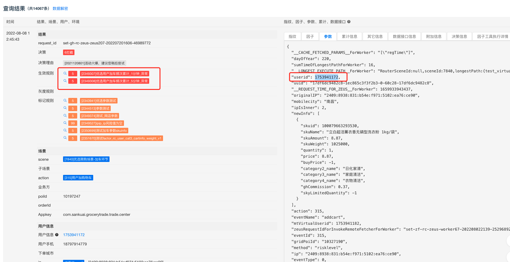 2）通过排查探针定位到 规则：优选用户加车频次累计_5分钟_异常 rule_youxuan_user_cart_num_5m 是因为命中累计因子：优选用户加车频次累计_5分钟factor_youxuan_user_cart_num_5m，累计因子取值=136，对用户具体请求进行分析。 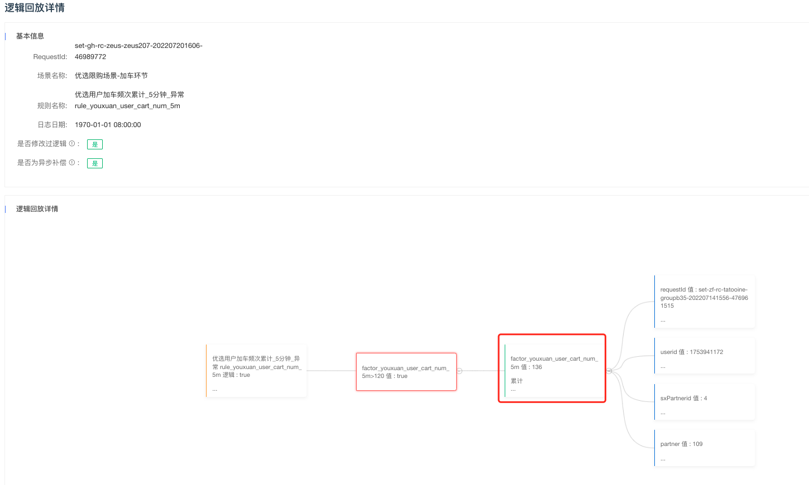 3）写累计查询：输入累计因子id/名称=rule_youxuan_user_cart_num_5m、选择累计事件=8564、时间（拦截发生时间是：2022-08-08 12:45:43 ，累计周期是5分钟，时间区间应包含 2022-08-08 12:40:43-2022-08-08 12:45:43）、按何累计userid=1753941172 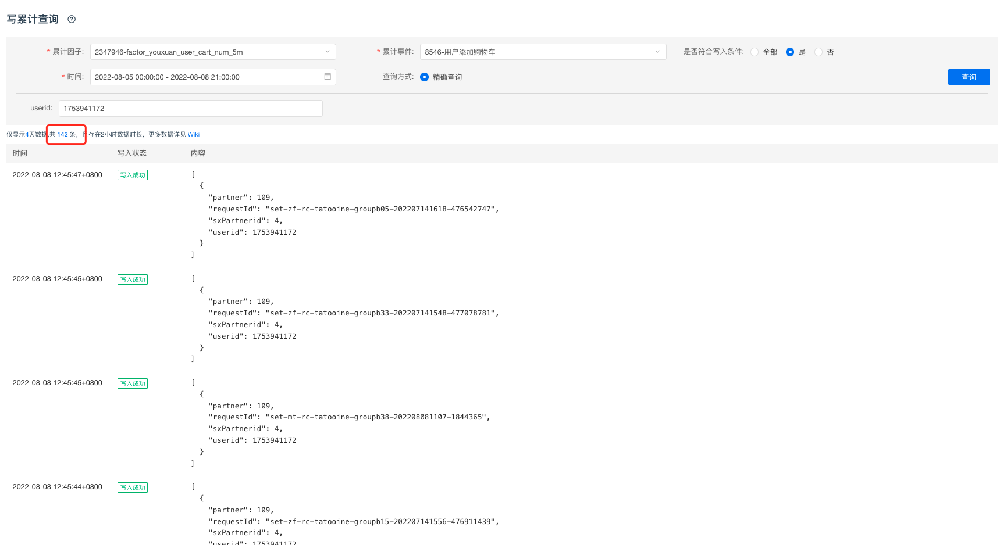 4）定位：从查询结果可以看到查到142条记录，这是由于所选择的时间区间大于 2022-08-08 12:40:43-2022-08-08 12:45:43 这个累计周期，您可以根据时间推算出具体请求的发生时间，读累计详情中内容即为被累计到的请求明细。 |